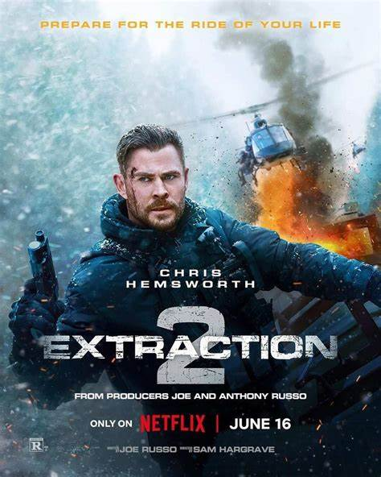
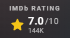
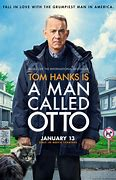
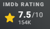
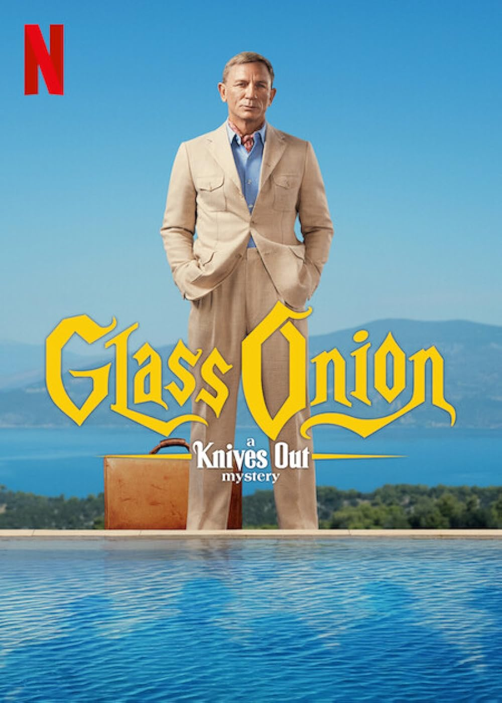
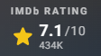

| Synopsis | Casts and Directors | Rating | |
|---|---|---|---|
|  | After barely surviving a previous mission in Dhaka, Bangladesh, Tyler is rescued from the river and taken to UAE for medical treatment. Nik is by his side throughout the duration. Even though Tyler is in an extended coma, she refuses to give up on him. Tyler regains consciousness. Intense physiotherapy later, Tyler is regaining mobility. |
Chris Hemsworth, Adamn Bessa, Golshifteh Farahani Director: Sam Hargrave |
 |
|  | Otto Anderson (Tom Hanks), a 63-year-old widower, lives in suburban Pittsburgh, Pennsylvania. After retiring from a steel company, he plans suicide, having lost his wife Sonya (Rachel Keller), a schoolteacher, six months previously. Otto is a grumpy old man, who argues at the super store about being charged for 6 yards of rope, when he only took 5 yards, and the extra yard cost $ 0.33. 33 cents. Otto is a sociopath and doesn't like other people. Otto works for the neighborhood association and checks for every infraction by residents like bikes on lawns, parking permits not displayed correct inside cars and so on. Otto cancels his phone, electricity and gas accounts.. he vacuums his house.. He dresses immaculately. He has decided to commit suicide. | Tom Hanks, Mariana Trevino, Rachel Keller Director: Marc Foster |
 |
|  | During the COVID-19 pandemic in May 2020, Detective Benoit Blanc (Daniel Craig) is hired by Helen Brand (Janelle Monáe) to investigate the death of her twin sister, Cassandra "Andi" Brand (Monáe). Andi had committed suicide just 2 days ago and the news of her death has not been announced just yet. On the day of her suicide, she had sent an email to Miles & his entourage, threatening to have a piece of evidence that she can use to bring his entire empire down. Helen is sure that Andi was murdered. Helen could not find the "evidence", supposedly in a red envelope, anywhere in her apartment. While she was there, she receives an invitation from Miles (for Andi), to attend a murder mystery at his private Island. | Daniel Craig, Kate Hudson, Edward Norton Director: Rian Johnson |
 |